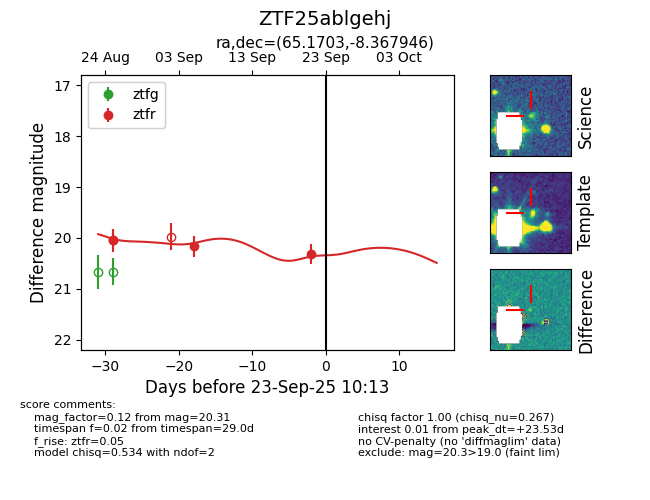
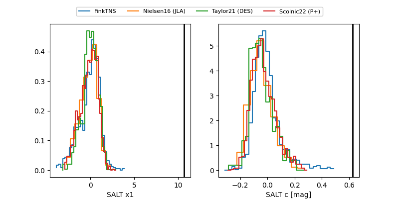

FINK: ZTF25ablgehj
Lasair: ZTF25ablgehj
ALeRCE: ZTF25ablgehj
ZTF25ablgehj (ztf,fink)
equatorial (ra, dec) = (65.1703,-8.36795)
galactic (l, b) = (202.3480,-37.20615)


last ztfr=20.31
3 ztfr detections